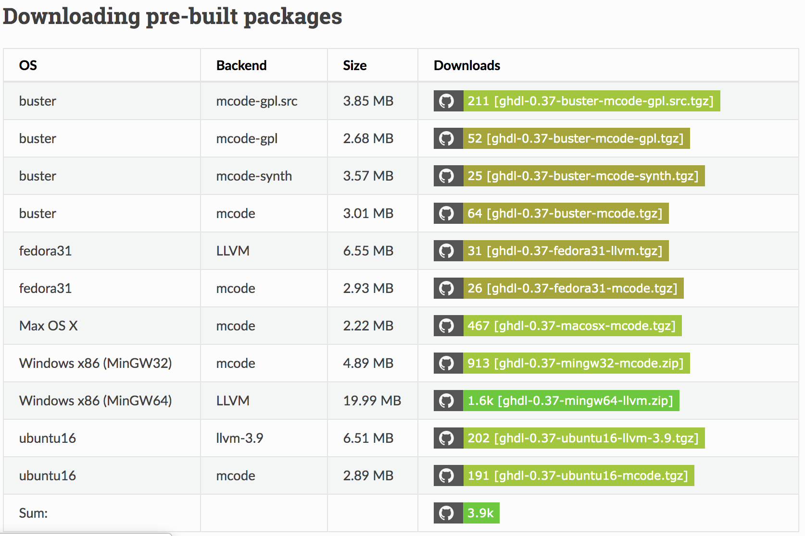
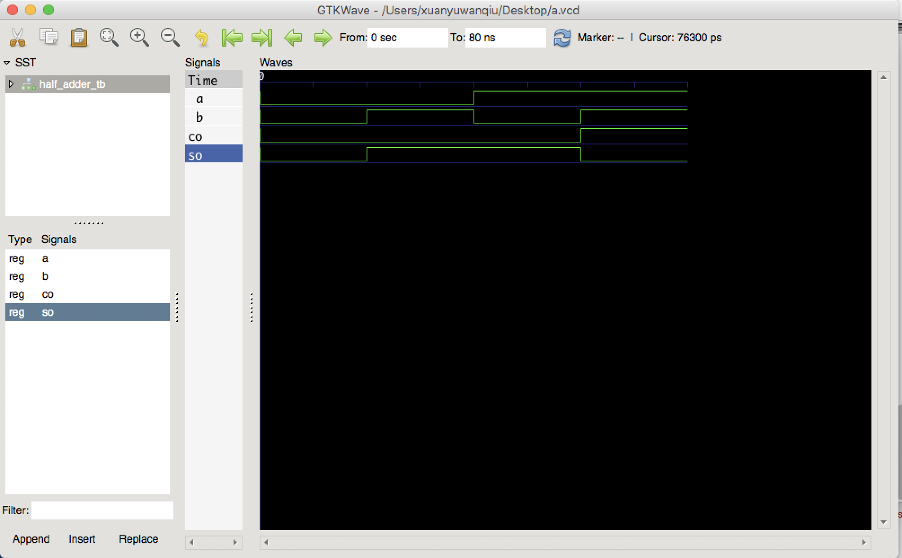

先给出答案
可以替代一部分功能
- 如果你是一个学工科的学生，正在学习EDA。
- 你也许还需要诸如“立创EDA”这样的设计软件辅助，因为你们可能还需要用原理图仿真
- 麻烦的地方还有就是需要自己编写testbench，不能由波形文件直接生成，但我感觉未来发展还是有希望有更便捷的图形仿真界面的
- 如果你只是想学习VHDL语言，那么GHDL+GTKWave其实也是可以的，GDHL相信也会越来越强大
为什么需要替代
- Quartus ii 占空间大（Quartus ii：好几G；GHDL+GTKWave：40M左右)
- Quartus ii 下载需要破译
- Quartus ii 编译慢（相比于GHDL慢很多，用过的人都懂）
- Quartus ii 只能在Windows系统下运行
也有博主做过相关吐槽https://www.xuebuyuan.com/1786786.html
Windows下用GHDL+GTKWave代替Quartus ii
https://www.bilibili.com/video/av77054717
Linux下用GHDL+GTKWave代替Quartus ii
https://www.xuebuyuan.com/1786786.html
Mac下用GHDL+GTKWave代替Quartus ii
因为主要想要介绍的是Mac系统下的，其它两个系统给大家推荐一下教程就不赘述了。如果推荐的方法过时了，可以具体的可以看一下GHDL的官方文档https://ghdl.readthedocs.io/en/latest/。或者在底下留言，一同探讨。
一、安装GHDL
在macOS High Sierra系统 10.13.6下，我安装了GCC9.0.2_1后好像就自动有了GHDL。
我删除GCC后却依旧可以使用GHDL，我不知道他是不是来自GCC更低的版本，或者是来自Xcode工具，亦或者是mac系统自带的。
为了解决这个疑惑，我去翻阅了GCC的官方文档，但是依旧未能解决疑惑。有正解的小伙伴可以在评论提供一下。我只能根据查到的一些蛛丝马迹估计是来自Xcode工具，如果你下载了Xcode并安装了GCC依旧无法使用GHDL的话。那么请看一下mcode的版本，也需要有GCC，安装也是非常方便，就是国内下载github上面的东西大家也懂的，好在文件不大。
我们从GHDL官网提供的链接下载mcode版本的GHDL，https://github.com/ghdl/ghdl/releases/download/v0.37/ghdl-0.37-macosx-mcode.tgz。
其它系统可以看这里：

解压后随便存个地方，设置一下环境变量就可以使用了。
设置环境变量可以修改~/.bash_profile，方法如下：
$ vim ~/.bash_profile
将下面这段文本添加进去，注意替换<解压文件存放的目录>和修改版本号：
PATH="<解压文件存放的目录>/ghdl-0.37-macosx-mcode/bin:${PATH}"
export PATH
让修改生效：
$ source ~/.bash_profile
由于之前已经安装GHDL了，我给新的GHDL起名ghdlm以做区分。如果操作成功，在命令行输入指令可以看到：
$ ghdlm # 新安装的
ghdlm:error: missing command, try ghdlm --help
$ ghdl # 之前的
ghdl: missing command, try ghdl --help
如果你在source那一步遇到问题，那重启电脑就好了。
二、安装GTKWave
$ brew cask install gtkwave
请不要忽略cask。
最后安装好的文件会在Application里，但我们不需要主动打开它。
三、GHDL配合GTKWave的使用
我们先做一个简单的样例，就比如半加器吧。
先编写我们的vhd文件，我们这里需要两个文件，如果学过Quartus ii的话应该会清楚，我们需要一个vhd文件和一个波形文件。在这里，我们将用另一个vhd来代替波形文件。
1. 编写
首先，编写半加器的文件，命名为half_adder.vhd，命名是需要格外注意的问题：
library ieee;
use ieee.std_logic_1164.all;
entity HALF_ADDER is
port(
A: in std_logic;
B: in std_logic;
CO: out std_logic;
SO: out std_logic
);
end HALF_ADDER;
architecture behv of HALF_ADDER is
begin
SO <= A xor B;
CO <= A and B;
end behv;
接着，编写半加器的testbench文件，命名为half_adder_tb.vhd，这可能需要掌握一些元件例化的知识：
library ieee;
use ieee.std_logic_1164.all;
entity HALF_ADDER_TB is
end HALF_ADDER_TB;
architecture tbbehv of HALF_ADDER_TB is
component HALF_ADDER
port(
A: in std_logic;
B: in std_logic;
CO: out std_logic;
SO: out std_logic
);
end component;
signal A,B :std_logic := '0';
signal CO,SO :std_logic;
begin
u1: HALF_ADDER port map(A,B,CO,SO);
input: process
begin
A<='0';B<='0';
wait for 20 ns;
A<='0';B<='1';
wait for 20 ns;
A<='1';B<='0';
wait for 20 ns;
A<='1';B<='1';
wait for 20 ns;
wait;
end process;
end tbbehv;
由于注释可能会报错，在此就不加了，但是学过元件例化应该不难理解，如果有困难可以百度“VHDL TESTBENCH”，有很多教程。
2. 编译
然后我们需要先编译half_adder.vhd和half_adder_tb.vhd两个文件
$ ghdl -a half_adder.vhd
$ ghdl -a half_adder_tb.vhd
然后由half_adder_tb生成可执行文件
$ ghdl -e half_adder_tb
3. 生成波形文件
$ ghdl -r half_adder_tb --vcd=a.vcd
名字可以随便起，不一定是a.vcd，但是要有后缀名，为了GTKWave打得开。
我们先修改一下.vcd文件的默认打开方式为GTKWave，以后就可以双击直接打开。
这时候就可以看到波形了（注意先点击half_adder_tb，再把左下角信号拖进Signals那一栏，并且用放大镜缩放视图到合适的位置）：

GTKWave的功能还是很强大的，大家还可以摸索一下。
四、便捷的方法
不知道看到这一步之前是否就有被劝退的呢？
被麻烦的命令行操作，还是复杂的testbench文件。
但其实我想说，既然是命令行操作，为什么不用一个shell脚本或者一个python脚本来搞定呢？testbench也可以结合自己的使用习惯生成，或者输入波形来生成。
__--__--__--__--
____----____----
我们来一个简约版的：
echo -e "\033[32m第一次使用会安装必备的依赖，请稍等片刻\033[0m";
info=`which ghdl`;
if [ -z "$info" ]; then
echo -e "1";
else
echo -e "ghdl is installed";
fi
if [ ! -d "/Applications/gtkwave.app/" ]; then
echo -e "installing gtkwave";
brew cask install gtkwave;
else
echo -e "gtkwave is installed";
fi
if [ -z "$1" ]; then
echo -e "gvhdl: missing command, try gvhdl --help"
elif [ -z "$2" ]; then
ghdl -a "$1".vhd;
ghdl -e "$1";
ghdl -r "$1" --vcd=a.vcd;
rm e~"$1".o;
rm "$1".o;
rm work-obj*;
rm "$1".o;
else
ghdl -a "$2".vhd;
ghdl -a "$1".vhd;
ghdl -e "$2";
ghdl -r "$2" --vcd=a.vcd;
rm e~"$2".o;
rm "$2".o;
rm "$2";
rm "$1".o;
rm work-obj*;
fi
由于版本可能不一样，我在这里给个样例，大家参考即可。另外也没有编写生成testbench的部分，如果有感兴趣的，可以留评论哦。
以后我会在博客园多更一些与Mac系统使用相关的，和Web开发相关的，希望可以和大家一起探讨学习。